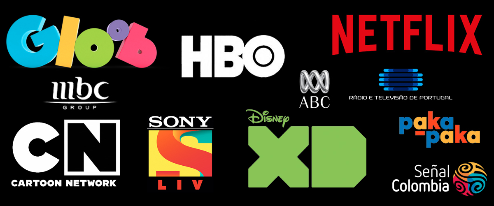
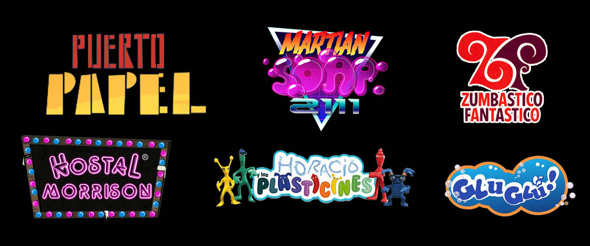

Canales/Broadcasters
Escritor de/Writer of
Martian Soap 2111
- 9+ años
- 2D
- Piloto
Es el año 2111 y Aurora se acaba de mudar a Marte, donde deberá aprender a jugar futbol anti-gravitacional.
Piloto desarrollado para Disney XD.
Puerto Papel
-6 a 10 años
-Stopmotion + 2D
-52x11'
Matilde es una niña muy especial: Despierta cada día con un poder mágico que no puede elegir ni controlar.
Serie exhibida en TVN (Chile), Paka-Paka (Arg), Señal Colombia, Gloob (Brasil), HBO (Asia), ABC (Au), MBC (EAU), Sony (India), RTP (Portugal) y SVT (Suecia).
Hostal Morrison
-6 a 10 años
-2D
-26x11'
Un grupo de monstruos decide convertir su antigua casona familiar en un hostal para humanos.
Serie exhibida en Canal 13 y CHV (Chile), PakaPaka (Argentina) y Cartoon Network (LA).
Horacio & Plasticines
-Pre escolar
-Muñecos + Stopmotion
- 52x7'
Los Plasticines ayudarán a Horacio a resolver todas sus interrogantes a través de lúdicas canciones.
Serie exhibida en TVN (Chile), PakaPaka (Argentina) y Netflix.
El Ombligo de Edgar
-9+ años
-2D
-17x26'
Serie original parte del bloque de animación “Zumbástico Fantástico”.
Serie exhibida en TVN (Chile), Cartoon Network (LA) y Netflix.
Pepe un Cuadrado
-9+ años
-2D
-17x26'
Serie original parte del bloque de animación “Zumbástico Fantástico”.
Serie exhibida en TVN (Chile), Cartoon Network (LA) y Netflix.
Telonio & Demonios
-9+ años
-2D
-17x26'
Serie original parte del bloque de animación “Zumbástico Fantástico”.
Serie exhibida en TVN (Chile), Cartoon Network (LA) y Netflix.
Matilde & Martin
-Pre escolar
-2D
-5x5'
Microserie que enseña conductas de compra responsable a los niños.
Serie exhibida en la red de televisión pública educativa de Chile, Novasur.
Renata
-6 a 9 años
-2D + 3D
-12x11'
Renata odia las matemáticas Pero un ser de otro planeta le enseñará que las matemáticas están en todas partes.
Animonitos
-9+ años
-2D
-10x23'
Un grupo de desadaptados animales endémicos de sudamérica deberán vivir - y sobrevivir - el día a día en la Capital.
Glu Glú
-6 a 9 años
-2D
-10x23'
Una pandilla de peces y moluscos se lanza a una oceánica aventura en busca de un antiguo y misterioso tesoro pirata.
Segurito y el Gato Joe
¿Quién no ha estado en la escritura publicitaria, verdad? ¡Pero ésta es en 3D!